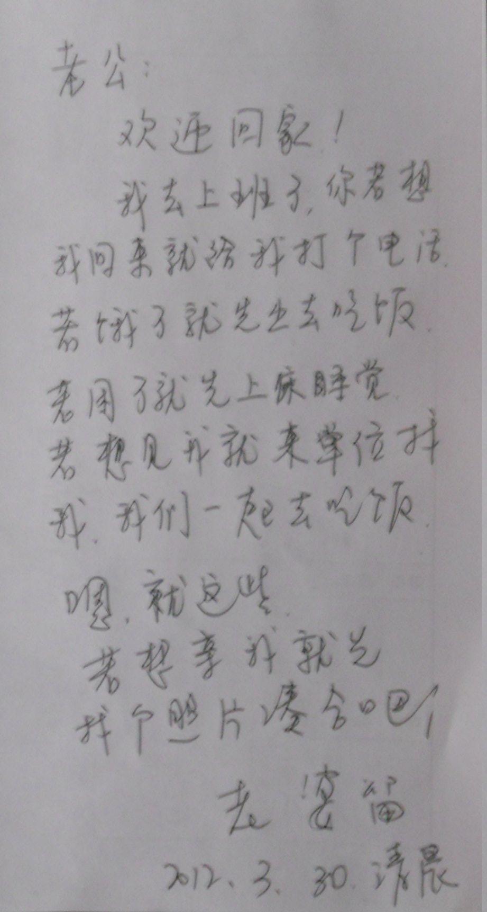
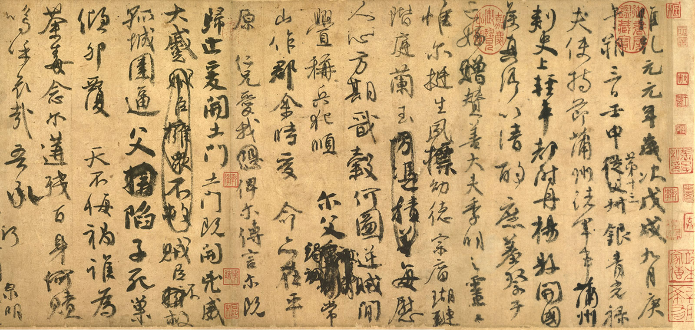
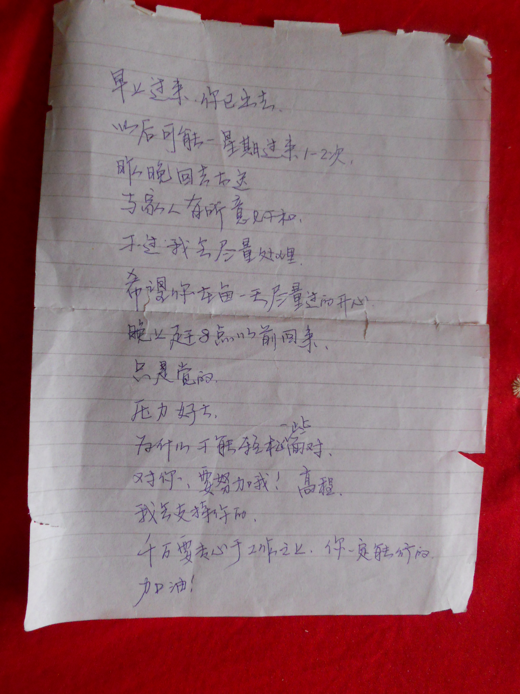
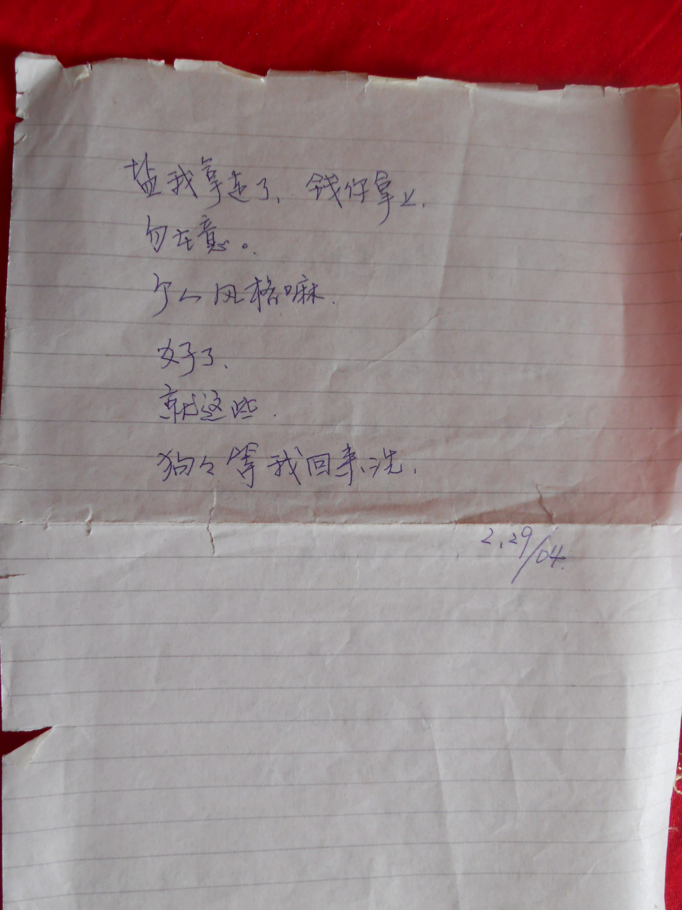

machine2012
Table of Contents
1 2012-01
1.1 2012-01-08
- 邵军的姑娘出生了，我们去看，去前不知怎么办，幸亏老婆想到买小衣服，给了1000 元才了
- 小家伙小小的，5斤多，邵军小心的什么是的
1.2 2012-01-10
- 不住此岸，不住彼岸，不往中流，问君何处安身；无过去心，无现在心，无未来心，还 汝本来面目。
- 忠者，人对团体之责任。孝者，人对来源之尊重。仁者，人对众生之态度。爱者，人对 内心之感受。信者，人对沟通之真诚。义者，人对大我之嚮往。和者，人对行为之期许。 平者，人对事务之均衡
1.3 2012-01-11
- 应无所住而生其心
1.4 2012-01-30
- 这个年过的不咋的，休息了10天，全没俢行
- 给邵军打电话，问孩子满月的事，想着给买满月礼物，光知道问时问了，就没想到不 办，幸好邵军说百天再办，否则还在想着满月礼物呢！
2 2012-02
2.1 2012-02-02
- 己经39岁了，人生的最佳时节，也是最关键的时期
2.2 2012-02-03
- 参考儒家思想的早读词：（邵勇）
- 热爱奥普，互助友爱；加强执行，大局为重；诚以待人，信以接物；以义统利，回报 社会
- 热爱奥普，互助友爱: （源于孝）
- 孝即对人本源的尊重
- 对于企业来说，孝首先体现为热爱企业，这是作为员工的本份。而管理层的孝，则体 现在关心、体恤下属，让员工体会到企业的温暖。培育孝道文化，还应该鼓励、支持 员工与家人建立和睦融洽的关系。
- 孝也可以引申为感恩文化，感恩也是企业文化优秀的组成部分，有了感恩之心，员工 的自我道德就会达到一种很高的境界。
- 加强执行，大局为重：（源于忠）
- 忠即对人所归属团体的尊重
- 无论企业采取什么样的措施来提高竞争力，最重要的是，这些措施必须得到真正有效 的落实和执行，否则就发挥不了应有的作用。执行力是决定企业优劣成败的关键，而 忠，是提高企业执行力的前提条件。
- 忠有忠于职守的意思。在企业中，忠包含两方面的意思，首先是忠诚于事业，员工要 忠实地履行自己的职责和义务，做好本职工作；其次要忠心于组织，个人利益服从集 体利益，在关键时刻要以大局和集体为重。
- 诚以待人，信以接物：（源于信）
- 信即对他人的尊重
- 自古就有“无信不立”之说。孔子在《论语》说：“人无信不立。人而无信，不知其 可也。”儒家讲正心、修身、齐家、治国、平天下，先决条件就是诚信。
- 同理，诚信是一个企业生存和发展的一个最重要的条件，只有取信于人，取信于社 会，企业才能够获得发展壮大。
- 以义统利，回报社会：（源于义）
- 义即对整体利益的尊重
- “义利观”是儒家思想最为精髓的思想，儒家所谓的义，是指整体的利益，民族与国家 的利益，对于企业来讲，强调生财有大道，利己不损人。企业在追求利益的过程中， 需要把追求利润与服务社会结合起来，以达到“以义统利”，“义利统一”，对于经济发 展和企业壮大也是必须的。
- 进一步说，社会发展的目的在于让所有人得利，企业发展的最终目的是让整个社会繁 荣，也就是说，企业发展了，要为社会发展作贡献，企业与社会将相互促进。
2.3 2012-02-06
- 正月十五，去姐家给囡囡过生日，又有几个人，其中一个五岁小女孩，很疯，和囡囡 玩的历害，小女孩把什么都往地上扔，囡囡拿着矿泉水要往我身上洒，当时感受到伤 害，等小姑娘出来，在记不得自己的情况下，抓住小姑娘的胳膊，她大叫，打了我两 下，向她爸告状，当时好尴尬
- 大概19岁，曾见到一个五六岁的小姑娘，意欲不良，幸未实施
2.4 2012-02-10
- 杭总觉得两瓶酒不够，让我再买一瓶，当时的念头丛生
- 再买一瓶，自己够大方，自己够好
- 把现有的三星级拿上，老婆反对
- 明天晚点上班去买，给杭总说，手机关机了
2.5 2012-02-11
- 下班了，想提前去买酒，杭总在面试，第二次想说，杭总正和刘总谈话
- 一块向酒店走，又叫杭总去看有没有酒卖，结果杭总买了一瓶三星级的
- 到了酒店，开始坐在中间，想到张国彪应该坐在这里，又换到下首
- 刚开始，大家不怎么说话，感覚自己受到伤害，喝了几杯后，大家都不怎么喝，感覚 两瓶也够
- 喝着喝着，就把不住了，最后喝多了。晚上郭建刚来，难受，后悔
2.6 2012-02-13
- 早上11点到北京
2.7 2012-02-14
- 今天情人节
- 薛宏涛今天到，小伙子感冒很历害，还要去大连，真可怜，只要公司要求，什么苦都 能受，自己却做不了什么，不能有意识的受什么苦
- 晚上在电视看到音乐台播琵琶乐，三个女人合唱，音色真美，联想到我“可怜”没有享 受，只有“无趣”的工作，心情进入抑郁
- 出去散步，脚底虚浮，心情易动。想到刘总两边公司的情况，待在兰州，那破地放， 那么远，连技术都没有；待在北京，上班还有几个人，下班说话人都没有，办公环境 不咋的，住宿不咋的；干不下去，辞职都麻烦，还要两个月周期
- 一路上，对自己说：时刻记住自己在哪里，对内对外保持注意力，记住自己。放弃所 有的成见，不人为的设立限制。不认同我我的念头，不认同我的不认同，不担心，不 软弱。决对的诚恳，观察和记录。
- 刘总按他的认同在生活，对他的期待，对他的依赖———> 自怜，软弱————————————> 惯性
2.8 2012-02-15
- 早上给小尚打了个电话，问昨天测试，情绪变化大，他说：‘还没来的及，着急吗？’ 那时，我回答：‘也不急，就是等着呢。’又急着想知道什么时能测试，又不便表现出 来，说：‘那好，等测完再说吧，好，再见.’
- 小魏是9号告诉我他发现问题的，我那时不想看程序，确认问题，推说16号解决，等到 北京，发现不了问题，又要兰州测试，还覚得他们应该测
3 2012-03
3.1 2012-03-15
- 一切都是自己的间题，小小个体的主观，决定着它的情感，思想。毎个人都在自己的 小泥潭里扑腾，互相埋怨对方的泥潭太臭。
- 2011年，为自己的性欲问题，迁怒公司
- 2010年，为自己买笔记本，埋怨刘总
- 2009年，为自己的小泥潭，怨天由人
- 40年了，一直由自己的机器惯性控制，向它挑战，这就是俢行
3.2 2012-03-16
- 正式提出辞职
3.3 2012-03-17
- 和赵总谈了辞职的事，很平静；赵总也不想这样辛苦了，过一阵子，她也要当顾问了
- 对刘总也没有抱怨，他按他的思维方式生活而己，我理解他
- 晚上就要和刘总谈了，能想到他的反映，无外乎忽悠。想起2001年走上编程之路时的心 境，当时在玩“轩辕剑3”，赛特从蜃怪的幻境中坚定的走出来，一路上遇到老婆、妮 可、恐惧之王、自己，最后面对撒旦，抛弃了亲情、友情，战胜恐惧、自己，在用最后 一口气使出绝招后，昏了过去，奇迹发生了，撒旦被消灭了，终于幻境消失，厡来身处 沙漠，相由心生，一切都是历练。赛特走在天山上，迎来了春天。
3.4 2012-03-18
- 晚上和郭聊了很长时闁，对俢行之路充满向往。人只不过是主观的奴隶，俢行就是从 奴隶变为主人
- 正是由于是主观，非常容易走错路，正路可以描述：万念不住于心，决对诚恳，无所 住而生其心，以达到一念不生
- 主观毕须死去，以迎来客观
3.5 2012-03-19
- 辞职书
- 刘总：
- 在奥普公司工作六年多，风风雨雨，一路走来，感慨良多。有不计回报埋头苦干的日 子，有写程序过程自得其乐的时候；和领导和同事一起融洽相处过，也在偏执时意气 用事过。
- 在奥普的日子里，是我人生的重要经历，在这里有提高，有成长，领导对我不错，宽 容，我发自内心的感激；在这里，完成了几个有技术含量的程序，对公司有重要的作 用，自认也对得起公司了。
- 公司这几年，经营调整，研发到了北京，我也抛家随着公司来了；我是对个人生活有 要求的人，在这里情绪低落，兰州又完全没有研发氛围，自二零零九年一直干的不开 心，一度迁怒于周围的人，都成了我发泄的对象，我诚恳的对那一时期态度道歉。经 过了这么长时间，我倦了，对工作提不起兴趣，缘尽了，心死了，要休息了；再者， 程序还是年青人做的好，我这种老人不适合，请领导体谅我这没追求的人！
- 在这里这么多年，我不想对公司造成大的影晌，因此自辞职书呈交之日起，三个月 内，希望公司尽快招人，以顺利移交。这是我在奥普最后的日子，我也会珍惜，就我 目前的状态，什么也干不了，只能给新人教教程序设计，三个月，转转瞬即逝，之后 恕我无能为力。
- 邵 勇
- 2012年03月19日
- 晚上，刘总回来，呈交了辞职书，脸发热，心乱跳，万念不动于心啊，俢行啊，才是开 始。写名字的时候手也不稳，心动了。
3.6 2012-03-23
- 昨天，一上班，碰见刘总在拖地，就机械的抢过拖把，机械的拖着地，小何要了两次，都 机械的坚持，虽然当时意识到了，但影响却持续着，直到和赵总说了半天，才好
- 下午，问谢勇程序的情况，又机械的紧张，当时意识到了，好长时间才平息
- 下午下班，和刘总、谢勇一块出来，突然机械的进入说不清的，但经常进入的状态：
- 和大家会餐的时候
- 去年在兰州经常出现，上班时一个不如意，一个眼神，一个动作
- 和朋友在一起时，和家人在一起时，周围的刺激，自己偶然的念头
- 回溯到1991年，那时，这个状态是那时产生的，当时受手淫的机械控制，对手 淫的忧虑，自责，产生的心理问题，抑郁，自卑，软弱，胆怯，就是一个可怜 虫，本质十分脆弱，稍有风吹草动，就受影响
- 1991年7月刺激，形成了这个“我”，强大，一直影响着
- 在这状态下，还产生了自闭，自傲的特点，进而形成偏执的性格
- 2009年的按摩，见到王辉的女朋友的反应
- 毎个人都有这样的问题，都是机械的机器；我遇到的都不错，一切都要由自己负责， 用东方的智慧，西方的知识，探寻
- 工作自己，豪不软弱，有意识的受苦，万念不动于心
3.7 2012-03-31
- 昨天早上回到兰州，一下车就飘起了小雪
- 到家，看见老婆写的字条 
- 老婆是个单纯，开朗的人，和我正好互补；她深爱着我，我也爱她
- 2005年，她被我特立独行的气质吸引，投入我的怀抱，恋爱那时的日子，象是温暧而 甜蜜的梦，一切美好而满足
- 老婆对我百依百顺，2006年我去了奥普，开始早出晚归的日子，2009年又去了北京， 把她抛在兰州，她毫无怨言，只是要我开心就好
- 在北京，累了，烦了，老婆坐车来陪我，看我不开心，她着急，心疼
- 老婆是标准的小女人，没什么大志向，就想守着我，守着家，我的快乐就是她的快乐，我 的幸福她的幸福
4 2012-04
4.1 2012-04-03
- 这两天在家练毛笔字的“一”，毎天练2个小时，写出了几个满意的，只要用心，用功 夫，什么都能学好
- 爸爸练的是顔体，稍一留意，发现顔真卿是一了不起的人
- 颜真卿是唐代著名书法家，他的楷书一反初唐书风，行以篆籀之笔，化瘦硬为丰腴雄 浑，结体宽博而气势恢宏，骨力遒劲而气概凛然，端庄雄伟。他的行书遒劲郁勃这种 风格也体现了大唐帝国繁盛的风度，并与他高尚的人格契合，是书法美与人格美完美 结合的典例。他的书体被称为“颜体”，与柳公权并称“颜柳”，有“颜筋柳骨”之 誉。颜真卿用笔匀而藏锋，内刚劲而外温润，字的曲折出圆而有力。 
4.2 2012-04-05
- 昨天看了《异星战场》，不错，场面宏大，气势恢宏，有几段台词符合当前的感受
- “我厌倦了这种生活”，又印证了我离开奥普
- “去于一番事业，谈一场恋爱，或写一本书”，恋爱对一个人，多么重要
- 看着女主角，不禁想起杨玲玲，我发现还爱她，想起那时发生的事  
4.3 2012-04-09
- 今天又到北京了，最后一次
- 能认识到20年前的真相了
4.4 2012-04-15
- 今天和老婆通话，认识到，当自己状态不好时，看什么都不顺眼，和别人无关
- 自己常常会犯错，机械的犯错
- 只要无意识了，一切都成幻象
- 在惯性的力量下，什么都得不到
- 给赵总看tex，发现她干什么非常认真，不轻信，不放过任何含糊的地方，时刻精神不 涣散
- 毎个人都活在主观中，感受到的都是自己
4.5 2012-04-20
- 等一阶段跟着‘李杀’网，elisp的学习结束了，主要是201202–201204学习有点成 效，对这段时间还满意;)
- 熟悉了elisp常用的命令、功能
- region: forward-string, backward-string
- string: forward-string, backward-string
- match: match-string
- 编写了： machine-simplified-to-traditional
- 编写了： org-html-tranlate
- 下一步面对真实的elsip程序，下一个就是cedet
4.6 2012-04-21
- 记住自己 决对诚恳 体会主观
- 今天在‘榕树下’看小说，发现一个80后女作家，‘阿娜尔古丽’，看了－段她的文 字：‘有春播秋种的人生意象，定会出现春华秋实的绚丽景象。为此，选准自己的园 地，是至关重要的。在选择园地的当口，应凸现个性，渗透理性，融通美感。拥有自己 的园地，在物欲横流的漩涡之中，便不会失去自己。在自己的园地深耕细琢，幸福愉悦 的花朵定将灿然怒放’，有点意思。
4.7 2012-04-27
- 这两天，给赵总装debian
- 第一天，给她说debian安装盘在宿舍，回去却没找到，一下子着急了，结果到了办公 室，在柜子里找到了，意识到了
- 安装还未开始，想到分区，就到网上查分区方案，赵总很积极，拿着纸笔，我不确定，又 有赵总在边上问，进入了自动装态，结果安装失败，当天晚上睡覚都不好
- 接下来的几天，天天晚上都给赵总安装，发现赵总总是拿着笔，认真的记录，字写的 很认真，发现不清楚的，立刻记录，不论什么时候都保持意识，深深的感染了我
5 2012-05
5.1 2012-05-05
- 今天夏至，天热了
- 中午，赵总说伟伟到15号左右才能回来，让我先回兰州
- 可怜天下父母心，都一样
- 回吧，顺便解决awg问题，拖了不少时间了
5.2 2012-05-06
- 最近和左工常在一起
- 左工比我大十岁，有一个姑娘在上大学，想起我上中专时，也就十几年前，那时的父 亲也就左工这么大
- 父亲一个人在兰州带着我，母亲在西安，1986年母亲才从西安来到兰州，那时父亲 37岁，邵军上三年级
- 自此，全家住在35楼十几平方米的房子，直到1997年，真是不容易，那年父亲46岁
- 在35楼那十几平方米的房子里，我从14岁到24岁，渡过了人生非常重要的一个阶段， 我很多问题是在那里发源，形成的
- 回想过去，对比现在，我如今39岁，人生匆而过，非常之快
- 诚实的面对自己，没有资格埋怨父亲，没有资格埋怨任何人
5.3 2012-05-10
- 今天回兰州了
- 昨晚在火车上，看‘蜀山剑侠传’，看到司徒平和紫玲、寒萼姐妹救宝相夫人，遇到天 魔一段，六贼先后来扰，各种感受、念头，毫不理会，除了心灵湛明，神与天会,静待 一切自动发生；乙休告诉他们，只要稍一着相，便遭天劫；司徒平以无我的心态一一化 解。
- 寒萼最弱，遇到欲念，不禁心旌摇摇起来。这元神略一摇动，浑身便自发烧
- 紫玲忽然情绪如潮，齐涌上来，意马心猿，怎么也按捺不住。以前的，未来的，出乎料 想之外的，一切富贵贫贱、快乐苦厄、鬼怪神仙、六欲七情、无量杂想，全都一一袭来。 此念甫息，他念又生。越想静，越不能静；越求不动，却偏要动。连紫玲修道多年，竟 不能澄神遏虑，返照空明。猛觉出空中三个元神被魔头一照，全快消灭。
- 司徒平将一切付之无闻无见无觉。一切眼耳鼻舌的魔头来侵时，一到忍受难禁，便把它 认为故常，潜神内照，反诸空虚，那魔头果然由重而轻，由轻而灭。司徒平却并不因此 得意，以为来既无觉，去亦无知，本来无物，何必魔去心喜？神心既是这般空明，那天 魔自然便不易攻进。中间虽有几次难关，牵引万念，全仗他道心坚定，旋起旋灭。先还 知道有己，后来并己亦无，连左右卫星的降落，俱未丝毫动念。不知不党中，渐渐神与 天会，神光湛发，比起先时三星同悬，其抗力还要强大。道与魔，原是此盛彼衰，迭为 循环。过不一会，魔去道长，元神光辉益发朗照。
- 人生的各种感受，念头，都是自动发生，全凭主观，如不能记住自己，成为自动机器， 那就万劫不复了。人生就是个历炼的过程，六贼是各种考验，天魔是无情的考官，通过 考试的人能看到真相，没有通过的元神消散，便遭天劫，进入六道轮回,与畜生无异。
5.4 2012-05-11
- 今天早上，出去吃牛肉面，路上车多，就影响了
- 回来，张国彪打来电话，一个没接上，就有反应了，他要我电脑密码，一下子就不高 兴，念头乱跳，那是我的，还有程序，影响了好一会
- 中午，老婆回来，上床，本没想做爱，差不多的时候，突然要找纸，心念一动，就软 了，结果不行了，很懊恼了一阵，刚射的时候，身体处于敏感状态，很一会才正常，后 看到一床的衣服，想起刚才自动发生，发现根本记不住自己
- 下午，去长风小学找郭建刚，见了元刚，一下子想不起来叫什么，有了影响，下楼的 时候，自动与他打招呼，但心里早己着相，随后在健身房，在操场，都受影响
- 想起昨天，见了老婆，没有感觉，一晚上没有想过做爱，今天中午早早射了，她没有怪 我；老婆是个一心为我，在我低落时，她陪着我，毫无怨言，下午她给姐打电话，听得 出满心只有我
- 观察了一天，我根本记不住自己，现在的工作就是“时刻记住自己”
5.5 2012-05-16
- 回到北京
5.6 2012-05-19
- 晚上看了邓肯·琼斯的“月球”，果然不错
- 刚开始，sam看到另一个自己，与自己冲突，认识到自己的性恪问题，理解老婆回娘 家的厡因
- 两个sam发现了很多的克隆sam，又激活了第三个sam，最老的sam身体趆来趆差，就 象是三代人一样，不,就象是转世，注定最老的要死去，无法抗拒。sam帮助另一个 自己，不就是在帮自己？！
- sam给地球的家里打通电话，发现自己在月球己待了15年了，老婆几年前就去世了， 而且地球的家里还有一个自己！
- 他就职的公司用许多的克隆sam循环工作，三年一个周期，过期死去，激活下一个，为 了利益，这是片子的用意，也是所有公司的本质！
- 毎个人在世上都是过客，都是被利用了一下而己，不断的轮回，要是把毎个人看成是人 的克隆，或是转世投胎，别人就是自己，自己就是别人
5.7 2012-05-22
- 21:19 张国彪 元刚
- 21:20 居然想要笔记本
- 21:22 左工去世际坛
- 21:23 刘总的照相机
- 21:30 担心了一下，5.1的没玩
- 22:05 总想让别人知道自己重要，让别人肯定
- 22:05 烂地方，还干？
- 22:14 赵总看本子，紧张了一下
- 22:15 与赵总聊awg，又兴奋了
- 22:29 总想别人应该了解自己的感受，应该照顾自己的想法，做到自己期望的
- 22:32 杭总让报车票，坚持不报，还是期望刘总知道自己的想法，自己很重要，可笑，不 说出来？！情绪？哈哈
5.8 2012-05-31
- 最近患得患失，先是担心，刘总不给正常办手续，后对清明节没有按上班对待 耿耿于怀，后担心公司人员与自己的关系
- 上周五，到了算工资的时候，抑制不住的找刘总，上次回兰州几天不能算请假，他不 高兴，但也答应了
- 昨天，刘总通过赵总，让我把02B程序改成一对多的关系，覚得他得寸进尺，这点时 间，没有状态，要做也要离职以后，并且要付5000元
- 晚上，赵总回话，他知道我没时间，问“邵勇现在干什么呢？”，听到我要做还要付 费，笑了一下，不高兴的说“我不和他算，他倒和我算的清楚”
- 可以看出，他对上周问他要工资记的清楚，昨天晚上没睡好，今天不停的想这事
- 这事是我对自己定位不清，产生烦恼，继而向人家要工资，最近又不怎么好好干活， 还给伟伟写程序，他不愿意，我问题多，要人家清楚，呵呵
6 2012-06
6.1 2012-06-01
- 一切发生的时候浑然不觉
6.2 2012-06-09
- 早上给刘总打电话，犹豫不决了半天，总不自觉的想离职不顺利
- 今天请赵总、小陈、伟伟，一起吃饭，吃的有点沉闷，有点怨气
- 睡了一会，去发包裹，写字时紧张，想写好，做不到，只能是机械的
- 又用针缝包裹，开始想缝好，缝的太细，又要拆，那时就是机械性的，缝的时候，能 感觉到手不听使唤，手在抖，还扎了一下
- 刚回来，天就变了，好大的雨，由于前面的事，心情变的很糟，在房子里转来转去， 进入负面情绪，想起20年前类似的感觉，一直提醒自己，观察和记录
- 这时出现奇怪的事，看了时间，到了7点了，到了出去跑步的时间了，但雨还在下，出 不去，就观察和记录，这时的状态无能为力，快8点了，雨停了，出去跑步吧；回来的 路上，想到自己的这状态别人也会有，那别人说什么做什么自然不用生气了，我应该 帮别人；又想到20年前邵军生病，我那时应该帮助父母，我却在…；10年前父母装修 房子，我不帮一点忙，只顾自己的…；20前自己的沉沦，完全是自己入了魔
- 正想着，突然发现，时间才不过是19点，整整两个小时，我都认为是晚上7点，8点， 而实际是晚上5点，6点，我处于魔境，浑然不知，天哪
- 老婆打电话来了，我意识到，魔境只是我的，这是我的真相，我目前的工作是：观察 的记录，不加入我，以看到真相
6.3 2012-06-10
- 心无所住而生其心
- 王辉，小陈，小罗，高中同学
6.4 2012-06-24
- 这两天回家
- 昨天妈妈病了，吐的很历害，还给我们烙饼子，下午去了医院，直陪着她
- 妈妈老了，还惦记我们，该是我进孝道了，得有个孩子了
- 老婆也一直陪着，她爱我，我知足
6.5 2012-06-29
- 档案办理得花点时间，下个月先办停保手续，老婆为此不高兴，她想早些去西藏，还 想叫上卢，我也受影响
- 不自觉为在哪办纠结，放在高新，人才市场，安宁社保?
- 明天去兴隆山，叫了郭两口子
7 2012-07
7.1 2012-07-04
- 明天就去西藏了
- 周一还去做痣，周二卢说不去了，就急着买票，周三就买了飞机票，后知道可以从买黄 牛那买火车票，老婆很不高兴，我也很纠结
- 今天小张问关于办医疗保险的事，我发现很担心这次出行会影响顺利转移关系
- 最近从考虑出行到买票，总是担心不断，力量挺大，记住自己
- 周一还见了一个身残志坚的人，大鸟，写的一手好字
7.2 2012-07-05
- 到拉萨了，一切我都接受
- 飞机上遇到一个冰川考察的人，他常年在冰川上，最高有7000米，经常能采到雪莲， 家里有几袋子
- 老婆的同学李海亮不错，给我们留了家里钥匙，家里花不少，在他家能看到布达拉宫，不 错啊
- 拉我们来的司机是河南人，才来拉萨半个月
7.3 2012-07-06
- 订不到兰州的票，西宁西有7月16日的
- 今天计划是自己转，本来想去布达拉宫预约，遇见一个业务员，说拉萨一日游，“布 达拉宫＋大昭寺”350元，老婆又砍了价，300元成交，（我还担心了一下），去了地 质博物馆，布达拉宫，藏药博物馆，去大昭寺前，导游说她带进去只能呆15分钟，如 想自己去可以退85元，我们选择自己去，相当于一天用了215元。ok！
- 下午一直在八角街购物，买了帽子，藏族转经桶，想买手链，六字真言挂都舍不得， 老婆一句话，自动担心而没买
- 晚上，李海亮带我们吃饭，川菜馆，自动抢着付钱，10元舍不得，100元无所谓，自动 的
- 布达拉宫好美，雄伟，建驻真是艺术，真正的艺术，能够振憾人心
7.4 2012-07-07
- 李海亮早上把我们一直送到大昭寺门口才回去，王丽红11点就回去了
- 大昭寺里供奉佛祖12岁等身像，大昭里许愿：记住自己，决对诚恳
- 小昭寺里许愿：有意识的受苦（面对冲击，一无是处）
- 早上吃藏面时，遇见一个老藏民，厡来是交通局的，退体了，藏民满友好的
- 下午去罗布林卡，上午在大昭寺买票时都不情愿，自动的担心，去小昭寺，拿着10元 钱，想捐给佛祖8岁等身像，着到老婆给了10元钱，立刻自动的不情愿
- 真的如G所说：人就是一个机器，一切感受认识都由处部刺激、惯性决定。你想帮助别 人，但当面对他人时，你会发现你想撕了他
- 下午去罗布林卡，看到达赖的夏宫，藏族风格的房子真漂亮，环境也美，里面供奉的 佛像给人以安宁
- 跟着几个导游，一个藏族小姑娘很漂亮，但说的不清楚，明显不用心，后面的长的一 般，但讲的比较专业，遇到两个团到一个景点，主动接下来一块讲，我们一直跟她听
- 在罗布林卡呆了4个小时，出来都6点了
- 老婆喜欢里面的杏子，摘了不少，她在杏树面前高兴的手舞足蹈，象个孩子，真可爱
- 早上还在旅行社定了明天行程，珠峰，谈了个好价钱1680元，还不错，越野车，再找 两个人拼，明天8点出发，老婆很想去，好，ok，go！
- 人昭寺内的12岁等身像，面对时，内心有敬畏，看到藏民的虔诚，磕长头，人真的有 完全不同的生活方式
7.5 2012-07-08
- 早上8:40,司机来电话了，我们上车遇到拼车的团友，姑娘小孙和她婆婆，来自北京， 姑娘李丽，来自成都
- 小孙很漂亮，很任性，只想自己，连婆婆都不管；李丽是个活泼开朗的姑娘，和旅途 中的人都能搞好关系，有说有笑
- 今天是去珠峰第一天，第一个景点是羊湖，狭长的，很漂亮，水清天蓝
- 小孙，李丽一路上要求满多。小孙是个娇生惯养的姑娘，一切从自己出发，想去哪玩 就去哪玩，想花多少钱就花多少钱，婆婆在旁边就大肆自己想干嘛就干嘛，老公就是 挣钱的，养好她就是任务；李丽对中年吃饭的地方“川瑜饭馆”很不满意，和老板吵 了一回，搞的司机李师傅也不高兴，还发微博发泄
- 李师傅是陕西宝鸡人，一路有许多象他这样的陕西司机，毎个点都能遇到
- 到了日喀则，又出问题，一行5人，到了“吉康宾馆”，小孙婆媳不愿意和李丽住三人 间，认为这样她们吃亏了，和李师傅吵，李丽也认为她应该住标准间，李师傅要求她 交房间差价，李丽火了，给旅行社打电话，小孙母女认为，如果住三人间，应该给她 们补偿，李丽认为应该给她一个床位，但不应该影响小孙母女的住宿，但决不应该要 她付差价
- 大家都在在为差价问题纠结，都不开心，宾馆方面无法为李丽单独开标准间，最后三 人还是住在三人间了
- 晚上，大家出去，在日喀则转转，和小孙聊，发现她心里真的只有她，老公只是给她 提供经济来源，非常现实，自认为漂亮，招男人，一点不如意，不论场合，就发作。 可怕！
- 晚饭在“农家饭馆”吃，还行
- 晚上，老婆睡的不错
7.6 2012-07-09
- 今天是去珠峰第二天，从喀则出发，一路上经过318国道5000KM界碑，5248米的最高公 厕，5248米措拉山，中午在“大邑饭庄”吃饭
- 下午经过几道检查站，从318国道上土路，一路不好走，在观景台初次看到珠峰，绒布 寺是最高的寺庙，在绒布寺有一种草，摸了一下，立刻感到好痛，才发现草上有好多 刺，痛完又麻，草上应该有毒，绒布寺堆了很多石板，都刻有六字真言
- 到了大本营，一圈帐篷，和想象中差不多，上了观景台，在最近距离观察了珠峰，几 个女人都很兴奋，照了很多相，老婆很开心，运气不错，珠峰基本能看到
- 下了观景台，在厕所遇见一个老人家，随意问了一下，发现他是从河北骑车来到大本 营的，有64岁了，回去和老婆说了一下，她也很感兴趣，我们去找
- 老人家姓仇，叫仇智雄，电话：0311－82033861，他己经骑遍中国了，这次是打算到 尼泊尔、印度的，他信仰人佛教，是个皈依的居士，胸前挂着念佛机，和他聊的很开 心，说了净土宗、心经，他很高兴的要给他留言，留言本拿出来，已经写了一大半了，都 是沿路的人写的，我给他写了：
明雄居士：
骑车修净土
佛祖伴你行
南无阿弥陀佛
勇猛精进波罗蜜
- 老婆和张月星聊，也是个牛人，玩的是重装徒步，今天骑车路上遇见仇老，打算结伴 去尼泊尔，电话：18701137186
- 这两个人人精神与毅力感动了我，真的，有了这种力量，什么事干不成
- 注：仇老还有糖尿病
- 补：小孙又为晚饭问题和李师傅、旅行社计较，又给旅行社打电话，又要求早饭，最 后晚饭退了，早饭没有，真计较
7.7 2012-07-10
- 今天是珠峰第三天，早上为穿不穿毛裤上车，上不上厕所纠结
- 下午去扎什伦布寺，在5－9世班禅灵塔门口，导游下去到论经广场，我下去拍照，想 叫老婆和阿姨下来，招了几次手，她们没看见，自动的力量产生，就上去了，导游带 人从广场出去了，老婆开始埋怨不叫她们，现在跟不上导游了，我开始自动的担忧
- 下车去宾馆，下车时，老婆以为去饭馆，东西不拿，我的反应不正常，没有担醒，却 自动的从后面取行李，边取边自动反应，自动的要上去取一个小包，老婆叫住我，我 的反应不正常，自动关门，还关错了
- 出去吃饭，又是“农家饭馆”，李丽又问老板要泡菜，老板说没有，李丽不高兴了， 吃了一会，出去买了泡菜了
- 日喀则一路上记着观察自己，发现记不住
- 到了日喀则还发生两次不正常反应，我诚恳的认识到，自己这个机器，完全自动，毫 无自主能力，一定要记住自己，观察和记录，有意识的受苦
- 扎什伦布寺是班禅的道场，明显小干布达拉宫，四世班禅灵塔在文革时期作为粮仓使 用，墙上隐约能看到"伟大领袖毛主席万岁"几个字。5－9世班禅灵塔在文革期间被破 坏，10世班禅将5－9世班禅灵骨收集合葬
- 老婆埋怨我没叫她们跟上导游后，又听到有大雄宝殿，又找了一圈，自动的跟着她们 找到大雄宝殿，是一个诵经的地方
- 回到宾馆，有点感冒，不敢洗澡，对今天的过程反思了一下，又担心老婆对我有意见
- 补：小孙去了欧州，澳洲，以自己为中心，挺可怕！
7.8 2012-07-11
- 今天是珠峰第四天，早上从日喀则出来，顺着雅鲁藏布江开，有点小雨
- 李师傅今天兴致挺高，问小孙关于高尔夫球的问题，小孙一路上讲了有钱人的运动， 多有钱，多享受
- 到了拉萨，又一起去了一趟色拉寺，看了色拉寺的辨经，大家都饿了，出来到甜茶馆 喝了茶，坐16路公交车到了小昭寺，一起吃了饭，在八角街转了转
- 到了东措，这是旅游者的天堂，有驴友商店，驴友酒吧，拼车信息贴的很多，我们后 天打算去林芝，找了几个电话，李丽又介绍隔壁的巴朗学，找了班觉 （0891－6791973），林芝三日游350元，不包任何费用，晚上又给西域旅行社扬东 （13298901007）打了电话，1050元，大峡谷全包，就这两个选一个吧
7.9 2012-07-12
- 今天休整
- 早上老婆想让李丽把买的礼物开光，早早到了大昭寺，看到很多藏民围着大昭寺转， 磕长头
- 老婆有贪心，想开光，有沾便宜的心理，想混进大昭寺，偷偷开光不花钱，当时我处 于机械状态，装成藏民想混进去，过安检时，管理的藏民问了我几句藏语，我哪会， 被识破，只得出来
- 然后又去找扬东，老婆又开始比较，想便宜，给班觉打电话，也有司机打过来的，又 去和扬东问了半天，不能取舍，最后决定，报西旅行社，两个人2050元，这个价不错
- 回去路上，我接了班觉的电话，他问我们明天去林芝的事，我很顾虑，好象说不出不，不 能说我们报了别的团，只说我们有事去不了，进入了机器状态，持续了一路，一路上 想关照，还是很长时问才好
7.10 2012-07-18
- 飞机：3480
- 珠峰：3360
- 林芝：2050
- 火车：1100
- 其他：2200
8 2012-08
8.1 2012-08-03
- 回来办了养老保险，医疗保险，又去了民勤
- 7月29，30，31和长风的以前同事去了趟太白山，8月1，2回了504
- 最近状态很差，所有负面情绪都来了，是个机会
8.2 2012-08-04
- 以目前的状态，着到的都是幻象
8.3 2012-08-11
- 昨天晚上，郭很晚来访，应是心情烦闷，想来聊
- 我状态不好，两人不知聊些什么，就睡了
- 他现在要买房子，就本意来说不想买，但小罗一定要；我也状态差，本身就是乞丐， 哪有什么可以给予的
8.4 2012-08-15
- 看到青青，小小的以自我为中心的机器，一有不满，就拼命哭；想起我就是这样长大 的，都是以自己的感受看待一切，形成惯性，这就是要修行的
- 老婆好象怀孕了，我不自觉的担心，感觉前几次做爱状态不是很好，小孩会不健康， 观察它，自我的东西
- 明天，在朱邦复留言处也要加入会员
8.5 2012-08-16
- 4年前，偶然的機會，看到“老子止笑譚”，嘆為難得的好書，第一次知道朱邦復這名 字，但並不知是何許人也。去年機緣到了，知道朱先生為中華文化作的努力，看了“智 慧之旅”，很是欽佩；去年學習了“倉頡輸入法”，一直在關註“朱邦復工作室”，總 想有機會能向朱先生請教一二。
- 我叫邵勇，是一名程序員，今年39歲，做軟件有10年了，自認做的不錯，感嘆國人軟件 的落後，想在自由軟件方面做一點貢獻，目前是一名獨立程序員；作為中國人，對國學 很喜歡，中國文化是獨一而二的，就想在通過軟件做點文化方面的事。
- 今看到10806留言:“凡有意入會者，請直接通知本網網管，補辨日期限於九月底前”， 朱先生有此意，我正夢寐以求，請網管將我加入，我的網名“覺知的機器”,郵箱 “machine.of.awareness@gmail.com”,謝謝！
8.6 2012-08-21
- 今天有收获，不要把自己的感受当一回事，只看事实，只诚恳
8.7 2012-08-27
- 老婆怀孕，有反应了，爱睡觉，吃不下
- 今天去安宁生肓保建院，办理了生肓保建卡，领了叶酸
- 我今年39岁，並非學軟件出身，酷愛程序設計，程序設計都是自學，從2002年從事軟件 開發以來，一直把軟件當成一門藝術來做，毎一個程序盡量做到精益求精。目前我的定 位是獨立程序員，靠外包平臺軟件維持生活，其他時間用在自由軟件研究，同時，對國 學很感興趣，一直在努力學習。
- 2009年，偶然的機會看到``老子止笑譚''，嘆為難得的好書，但不知是何人所 作，2011年，機緣到了，訪問到了``朱邦復工作室''網站，看到``智慧之旅''，對朱先 生用電腦為中國文化所做的事真心佩服，一直關註工作室。
- 在自由軟世界裏，常用的linux，emacs，latex，gcc等優秀軟件，真是藝術，感叹國人 在這方要的落後，想在自由軟件方面做一點事。做過各方面軟件後，認識到軟件是西方 知識發展的極致，是人類設計出的最復雜的東西，但是缺少智慧，因為智慧是東方文化 發展出來的，相對知識，智慧對人更重要，目前想用知識(軟件)為智慧(文化)的啟迪和 傳播作一點事。
8.8 2012-08-28
- 我热爱emacs，使用有三年了，在上面写c，java，csharp程序，用autex写文档，用 org-mode记笔记；对emcas使用有很多经验，会一点lisp语言，自己写过emacs下的小应 用，如中文简繁自动转换（在emacs版有发表）；我现在有业余时间，想好好为emacs 使用和推广尽力，让emacs版有更高人气，让大家能在这里更好学到emacs知识。
- 多与其他版主沟通，将好的emacs使用方法以连载方式发表
9 2012-09
9.1 2012-09-04
- 今天的工作
- linix游戏 +
- 郭爸的问题 -
- 蒋工的问题 +
- 阿迪锅的做菜法 +
9.2 2012-09-05
- 今天的工作
- linix游戏 俄罗斯方块完成 +
- windows系统安装 +
- 记住自己 +
9.3 2012-09-06
- 今天的工作
- 俄罗斯改成gtk方式 +
- emacs版主
- 郭爸的机子
- 去安宁计生站，安宁社保局 -
- 在linux下安装cvs +
- 记住自己
9.4 2012-09-07
- 去安宁计生站，安宁社保局 -
- 记住自己
- emacs版主 +
- 俄罗斯总结 +
9.5 2012-09-08
- 记住自己
- emacs版主
- 俄罗斯总结
- 找赵总聊 +
9.6 2012-09-12
- 今天和石大伟聊了一会，感觉他状态不错，听的音乐也好，挺放松
- 我现在状态很差，昨天青青来要看片子，由于担心碟机、饭桌，不愿意，我进入了机器 状态，连接不上电视，打牌象是机械的反映，根本记不住自己。今天白天也不行，老想 着那天和赵总吃饭，没有掏钱，又担心昨天郭对我有意见
- 记住自己，决对诚恳
9.7 2012-09-18
- 前天，去大姨子那里，张增脉来给她装窗台，用锯子锯本板，我锯了3次，第一次偏 了，心里处于混乱状态，完全由惯性控制，又记不住自己，第三次把锯子弄断了，很 难堪。想起20前，去徒步到陇西，给农民割麦子，两下把镰刀弄断了，现在是我最低 谷的时候，是最差状态
- 昨天，父亲来家，问起网上工作情况，支唔了半天；做饭时状态很差，做了一个小时，做 的那个难吃，吃了一个小时，又把手给割了，好深的口子，太不觉知了，太记不住自 己了，太这样下去，就费了！
- 记住自己，决对诚恳
10 2012-11
- I am a chinese, use c/c++ for ten years.
- I is a emacser, and chinese emacs community master.
- < 求开发邮件群发软件>
- [项目分析及建议]
具体分析请看附件的pdf文件–"邮件群发软件需求分析.pdf"
这是个桌面应用程序，方便好用是目的，应有以下功能：
- 可定义一组邮件，定义一组邮箱，轮流群发
- 可定时发送
- 可设置后台发送功能
- 支持txt和html两种方式
- 不会进垃圾邮箱
- 防止IP屏蔽
- [报价及开发周期]
- 开发分为3个阶段：
- 1.详细设计，1周，￥1000
- 2.开发实现，2周，￥3000
- 3.测试修改，应用提交，1周，￥1000
- [项目分析及建议]
具体分析请看附件的pdf文件–"邮件群发软件需求分析.pdf"
这是个桌面应用程序，方便好用是目的，应有以下功能：